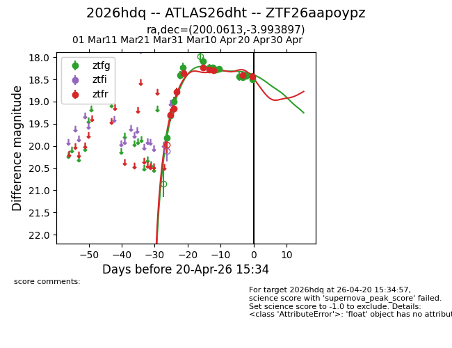
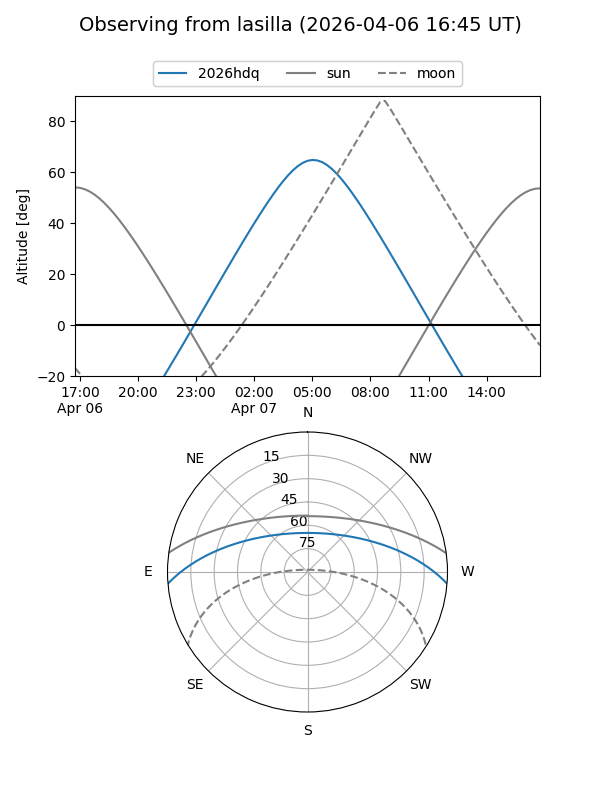
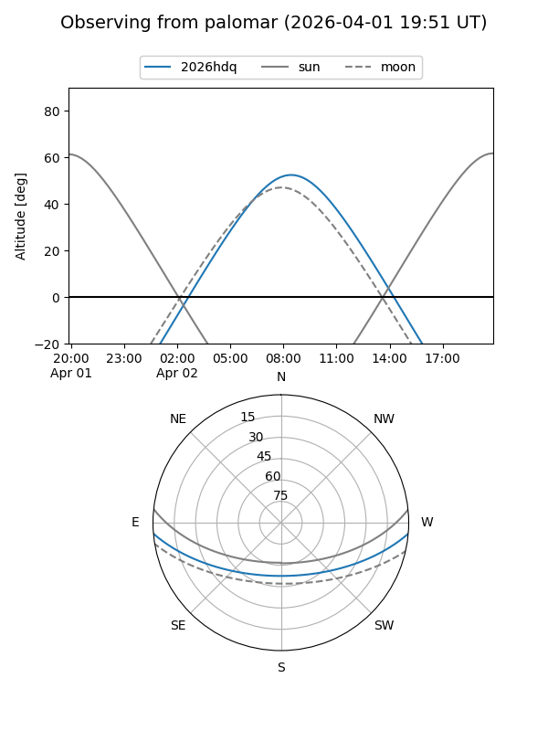
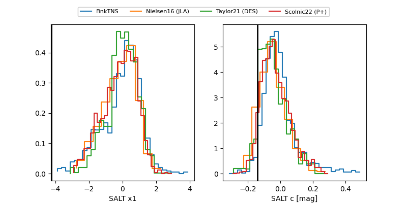

2026hdq
Target 2026hdq at 2026-04-20 15:45
Aliases and brokers:
FINK: link
Lasair: link
ALeRCE: link
TNS: link
YSE: link
alt names
ZTF26aapoypz (ztf,fink_ztf)
2026hdq (tns,yse)
ATLAS26dht (atlas)
Coordinates:
equatorial (ra, dec) = 200.0613,-3.99390
equatorial (HMS+DMS) = 13:20:14.72,-03:59:38.03
galactic (l, b) = (316.6254,+58.10990)
Flags:
Photometry:
last ztfg=18.51, ztfr=18.44
14 ztfg, 9 ztfr detections
Lightcurve

Visibility


Additional plots
